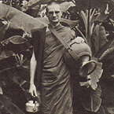

|
 |
Venerable Bodhipalo (Michael Markham) was born in Nottingham, England,
in 1948. When he was young, his family moved around quite a lot, and
he spent 18 months in Canada when he was eight years old. After leaving
school he did various jobs, but was unable to find anything that really
interested him; eventually, he decided to go travelling. He went overland
through Europe to the Middle East, and on to India and Nepal. In Kathmandu,
he read a book about meditation, which sparked off his interest; later,
while staying in Benares, he heard about a meditation course being held
in Bodh Gaya, and travelled there to attend. |
|
Venerable Bodhipalo returned to England from Thailand in 1986, to spend
time with his family and at Chithurst Buddhist Monastery. On the journey
back to Thailand he decided to undertake a lone pilgrimage in India
to the Buddhist holy places. After a few months a letter was received
by the community at Chithurst. Here are some extracts. I LEFT SAVATTHI ON 4TH DECEMBER and was glad I had the chance to see it. I wanted to walk to Lumbini but met with a lot of negativity from people. They told me all the terrible things that might happen -- I might starve, or get lost, or be robbed or killed, and it was too cold to sleep out at nights. Although it's easy to travel from place to place by bus with the pilgrims, and they're quite willing to take you, I wouldn't have enjoyed that at all. Originally, I was not going to use roads at all and go cross-country from village to village, but this proved impracticable. Fifteen years ago when I was here, the paddy fields were empty all winter, but now they're full of crops: winter wheat, rape, tapioca, sugar cane, vegetables. And here in Nepal they're still harvesting the rice in some places. Anyway, in spite of other people's negativity, I thought I should at least give walking a try. So I thought of all the good things that might happen, the kind, helpful people I might meet, etc., and decided to walk to Lumbini. On my first attempt at pindapata (almsround) in Bulrampur, I did quite well -- not a square meal, but enough to keep me going. One problem was trying to explain to people that I didn't accept money or raw rice. Also I think perhaps some people thought I was broke -- a hard-up hippie. So then I got a monk to write a note (in Hindi) saying something like, 'I am a Buddhist monk on pilgrimage to the holy places. I do not accept money. I depend on alms food and eat only between dawn and midday. I am grateful for your help.' With this note things have been easier. I stand in front of a shop or house for a while -- maybe half a minute -- and if they don't say anything, I move on to the next. If they ask what I want, then I give them the note to read. In most cases the response has been very good. Sometimes someone will walk along with me and chivvy their friends into giving me something. I usually look like the pied piper with a great gaggle of ragged children on my tail. One day I had quite a good meal of chapatis and sabjees and sweets. Other times I had small bits and pieces. I've slept in a variety of places; by the road in a small copse of trees with a stream running through it (plenty of streams in this area, so no problem bathing); one night in a straw stack. The villagers wanted me to sleep in a house in the village, but there were too many women and children around, so I slept outside the village in the threshing area on a heap of straw, under a large mango tree. That was one of the warmest nights. Sleeping out is very cold and it is usually impossible to sleep lying down. But I remembered my experiences in Kanchanaburi (in Thailand), and found that I could make more economical use of my robes, and keep warmer by sitting up. One night I found an abandoned grass hut near the road. Daytime is pleasantly warm, but it gets a bit hot in the sun around midday, if you're walking or exerting yourself. I regret I can't speak the language. I think it would be even more fruitful if I could. I've decided to carry on the rest of the pilgrimage in this way, going next to Kushinara, then Varanasi and Bodh Gaya. Of course, some of the dangers that people have pointed out might happen, but I'm sure they were just as likely in the Buddha's day, and I could probably more easily be killed by a taxi in London than by robbers in India. I'm sure that my greatest protection is keeping the Vinaya-discipline. The parami (virtue) of keeping good Vinaya is very powerful; especially important are rules about food and money. If I kept food or money, I could not go pindapata with a clear conscience. Many people have done their best to persuade me to accept money or carry food with me, but I know if I did that then pindapata wouldn't work, I would not get any of the help or respect that usually go to a samana (renunciant). I'm now in Lumbini. I stopped at Kapilavastu for one day, but there's not much to see. It doesn't appear to have been a very big place -- nothing like Savatthi -- but it's hard to say, as so little has been excavated. You can see the Himalayas from here. At Savatthi you couldn't see them. On the second day's walk I looked up in the late afternoon, and there they were; quite took my breath away. Green fields and trees stretching into the distance and beyond, the purple brown foothills, beyond this the snowcapped peaks against a vivid blue sky. The best time to see them is early morning, before eight; especially at sunrise, when the snow is bright pink.... I had a lot of doubts about doing this while I was still in England. When I first arrived in India I had doubts too. Sometimes I thought I was completely crazy, or that it was just a waste of time, a distraction, or just ego. But now I'm very glad I'm able to do this trip. I consider myself very lucky to have the opportunity. I hope more monks will do the same.... I hope all goes well with everyone at Chithurst. Excuse my terrible writing, but I'm not used to writing so small.
|
| Home Page |